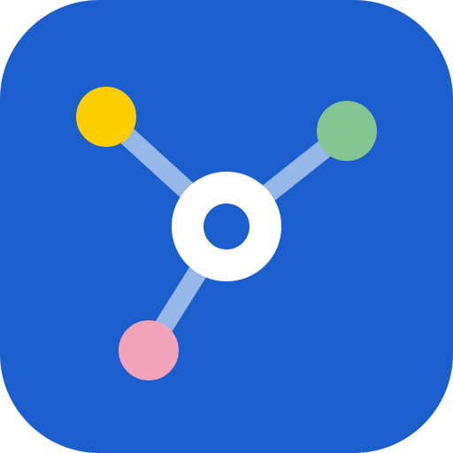
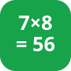
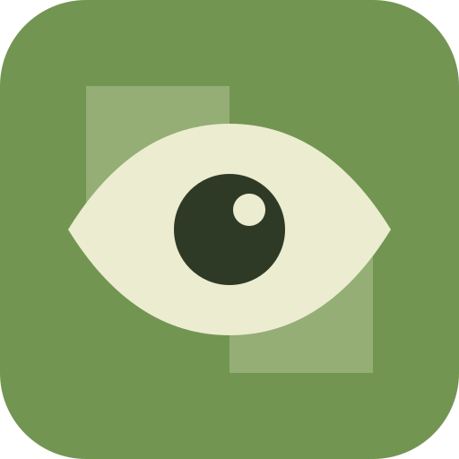

Alix & Côme
Nos apps
Tu Te Mets Combien ?Le grand jeu de culture — édition 70 ans de Papa ›

Point de RDVOù se retrouver dans Paris quand on ne part pas du même endroit ›

Calcul MentalEntraînement quotidien ›

Coup d'œilJouer contre Stockfish, relire ses parties chess.com, et s’entraîner sur ses gaffes ›